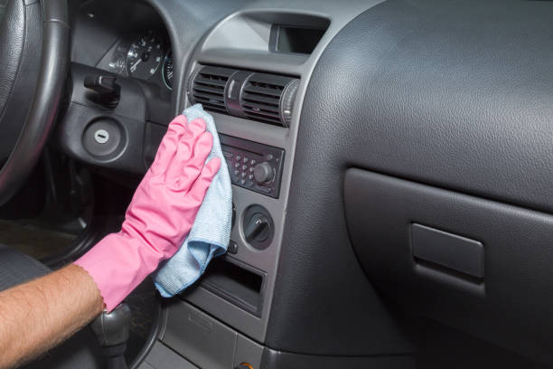

Limpeza interna Tradicional
R$ 30,00
Serviços que são executados na
Limpeza Tradicional Interna, são eles:
•Limpeza germicida dos plásticos.
•Aplicação de revitalizador nos plásticos.
•Aspiração do porta malas, carpete e bancos.
•Limpeza dos vidros com produto anti embaçamento.